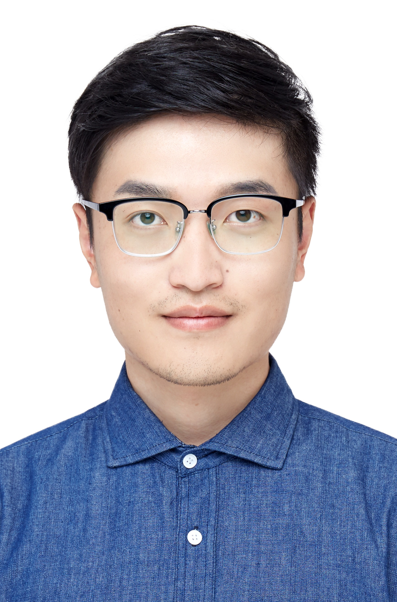
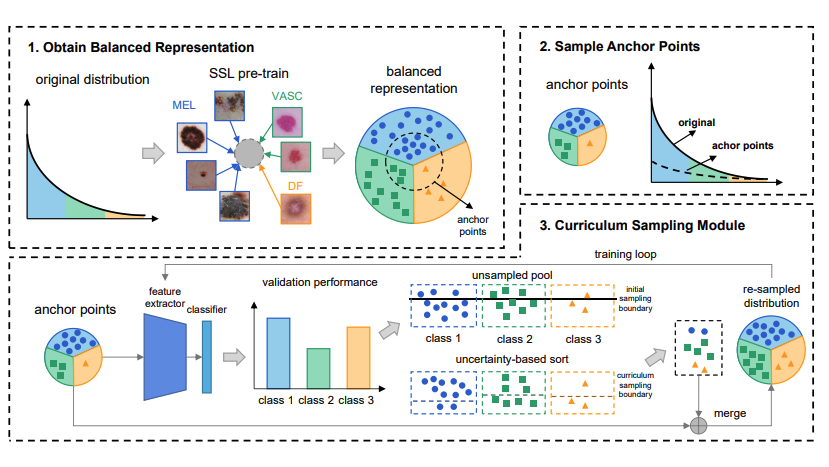
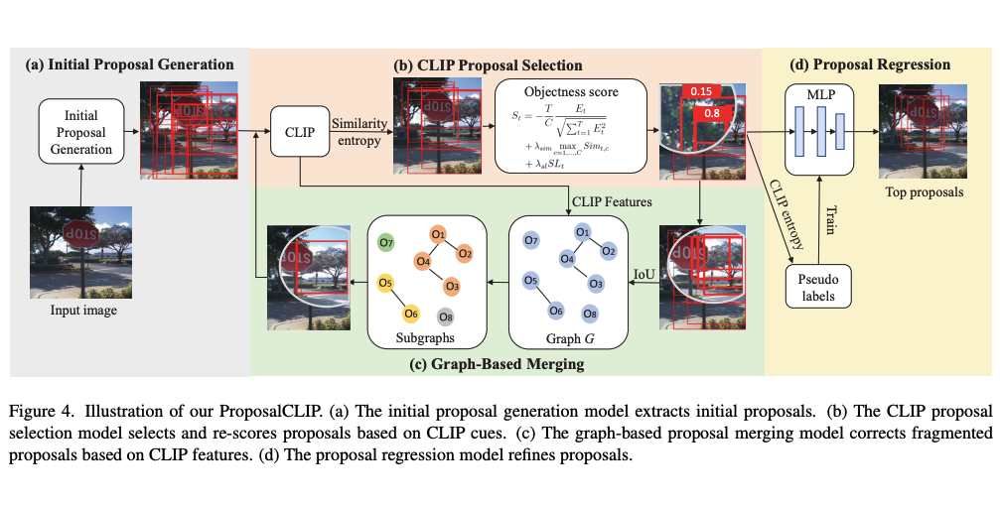
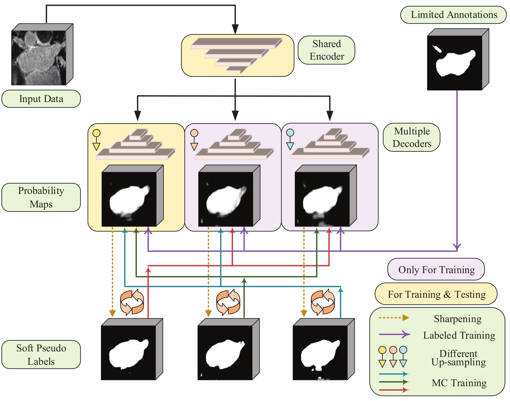
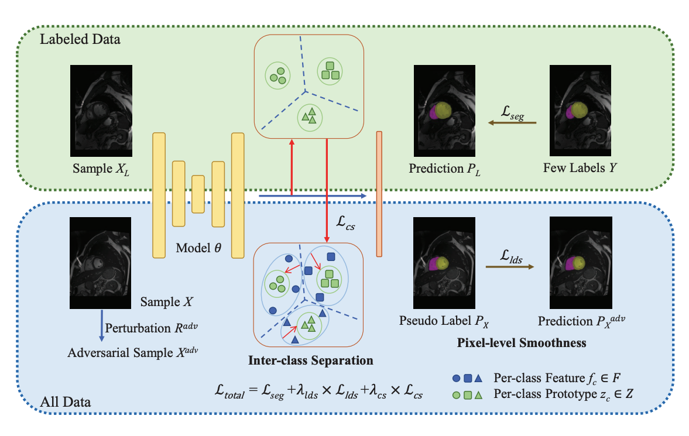
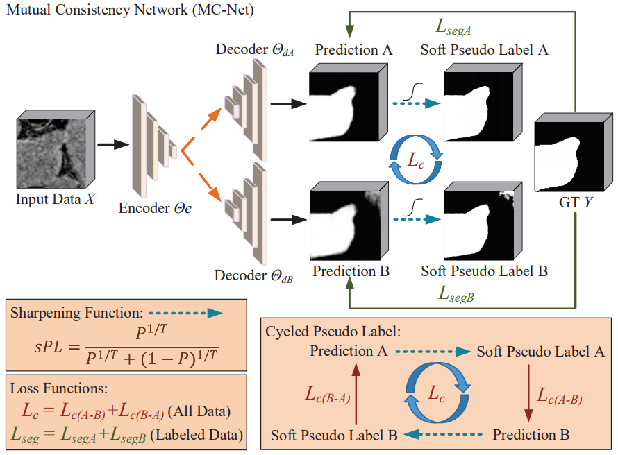
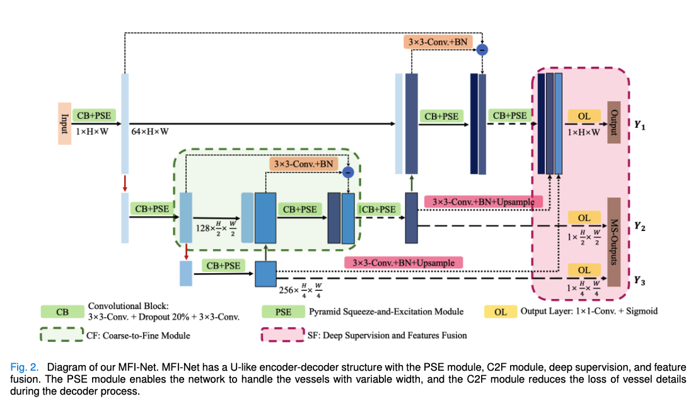
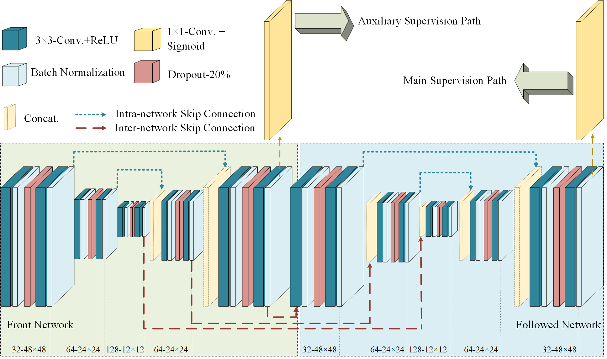
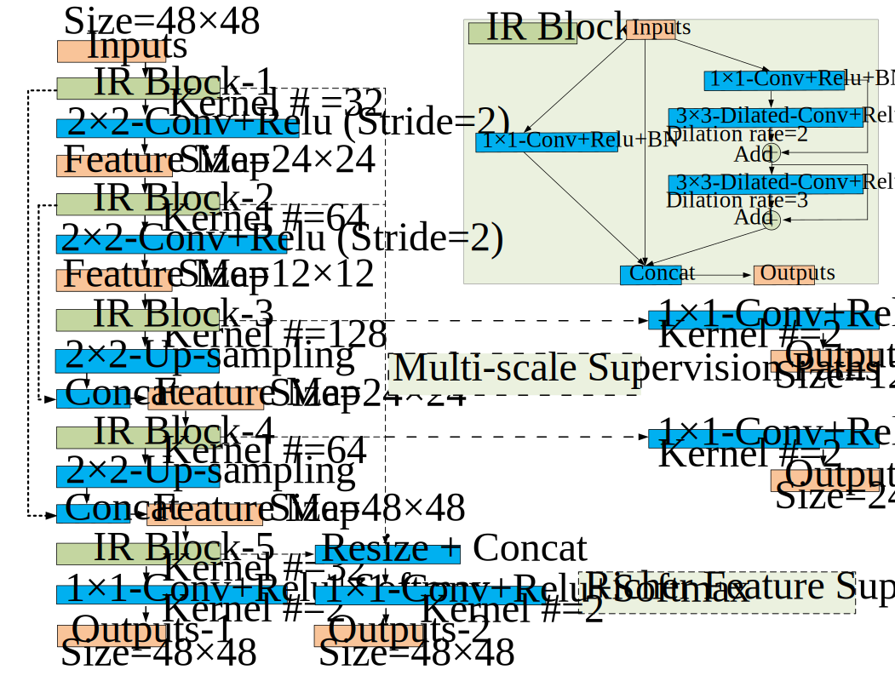
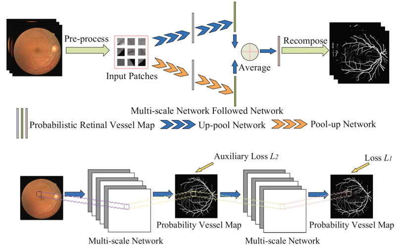

|  |
Yicheng(Eli) Wu 吴轶成PhD CandidateAffiliation: Faculty of Information Technology, Monash UniversityCurrent Address: Clayton, VIC 3168, Australia Email: yicheng[dot]wu[at]monash[dot]edu Google Scholar • Research Gate • LinkedIn • GitHub |
Introduction
- Biography
- Education Background
- 2021.06-Present • Ph.D. Candidate • Supervisor: Prof. Jianfei Cai (IEEE Fellow) and A/Prof. Zongyuan Ge.
- 2017.09-2020.04 • M.E. Degree • Supervisor: Prof. Yong Xia.
- 2018.11-2019.05 • Visiting Student • Supervisor: A/Prof. Weidong(Tom) Cai and Dr. Yang Song.
- 2013.09-2017.06 • B.E. Degree • Supervisor: Prof. Yong Xia.
- Internship
- 2020.08-2021.05 • Research Intern • Alibaba DAMO Academy
- 2019.05-2019.09 and 2020.05-2020.08 • Research Intern • Deepwise AI Lab
-
I am a second-year Ph.D. student at Monash University, Australia.
My research interests mainly focus on data-efficient medical image processing like limited data analysis, semi-/weakly/un-supervised learning, and domain generalization.
Faculty of Information Technology, Monash University, Australia
School of Computer Science and Engineering, Northwestern Polytechnical University, China
School of Computer Science, The University of Sydney, Australia
School of Computer Science and Engineering, Northwestern Polytechnical University, China
News
- [2022.06.06] One journal paper was accepted by IEEE JBHI (IF: 5.772). Congrats. to Yiwen.
- [2022.06.03] Two papers were accepted by MICCAI 2022, about Semi-supervised Segmentation and Long-tailed Classification.
- [2022.03.03] One joint paper was accepted by CVPR 2022, about Unsupervised Proposal Generation.
- [2021.06.11] One paper was accepted by MICCAI 2021.
- [2020.08.01] During my gap year, I will work as a research intern at DAMO Academy, Alibaba Group.
- [2020.05.12] I received the M.E. degree from Northwestern Polytechnical University, supervised by Prof. Yong Xia.
- [2020.02.27] One journal paper was accepted by Neural Networks (IF: 5.785).
- [2019.06.05] One paper was accepted by MICCAI 2019.
- [2018.05.31] I was selected as a joint master student supported by the China Scholarship Council (CSC).
- [2018.05.30] One paper was accepted by MICCAI 2018.
- [2017.06.20] I received the B.E. degree from Northwestern Polytechnical University, supervised by Prof. Yong Xia.
Representative Publications
(* denotes the correpponding author and † denotes equal contributions.)
Recent Joint Works
|  | Lie Ju, Yicheng Wu, Lin Wang, Zhen Yu, Xin Zhao, Xin Wang, Paul Bonnington and Zongyuan Ge* Flexible Sampling for Long-tailed Skin Lesion Classification MICCAI 2022 (Early Acceptance) [Paper] |
|  | Hengcan Shi*, Munawar Hayat, Yicheng Wu, and Jianfei Cai ProposalCLIP: Unsupervised Open-Category Object Proposal Generation via Exploiting CLIP Cues CVPR 2022 [Paper] |
Semi-supervised Medical Image Segmentation
|  | Yicheng Wu*, Zongyuan Ge, Donghao Zhang, Minfeng Xu, Lei Zhang, Yong Xia and Jianfei Cai Mutual Consistency Learning for Semi-supervised Medical Image Segmentation Submitted to Medical Image Analysis (Under Minor Revision), 2022. [Paper, Codes] |
|  | Yicheng Wu*, Zhonghua Wu, Qianyi Wu, Zongyuan Ge, and Jianfei Cai Exploring Smoothness and Class-Separation for Semi-supervised Medical Image Segmentation MICCAI 2022 [Paper] |
|  | Yicheng Wu, Minfeng Xu, Zongyuan Ge, Jianfei Cai*, and Lei Zhang Semi-supervised Left Atrium Segmentation with Mutual Consistency Training MICCAI 2021, vol. 12902, pp. 297-306, 2021 [Paper, Codes] |
Medical Image Segmentation with Limited Training Data
|  | Yiwen Ye†, Chengwei Pan†, Yicheng Wu, Shuqi Wang, and Yong Xia* MFI-Net: Multiscale Feature Interaction Network for Retinal Vessel Segmentation Accepted by IEEE JBHI (IF: 5.772), 2022. |
|  | Yicheng Wu, Yong Xia*, Yang Song, Yanning Zhang, and Weidong Cai NFN+: A Novel Network Followed Network for Retinal Vessel Segmentation Neural Networks, vol. 126, pp. 153-162, 2020 (IF: 5.785) [Paper] |
|  | Yicheng Wu, Yong Xia*, Yang Song, Donghao Zhang, Dongnan Liu, Chaoyi Zhang, and Weidong Cai Vessel-Net: Retinal Vessel Segmentation under Multi-path Supervision MICCAI 2019, vol. 11764, pp. 264-272, 2019 [Paper] |
|  | Yicheng Wu, Yong Xia*, Yang Song, Yanning Zhang, and Weidong Cai Multiscale Network Followed Network Model for Retinal Vessel Segmentation MICCAI 2018, vol. 11071, pp. 119-126, 2018 [Paper] |
Awards
- [1] 2021-2024 • Monash Graduate Scholarship (MGS) and Monash International Tuition Scholarship (MITS)
- [2] 2020 • NPU Excellent Postgraduate Thesis Award (Top 3%)
- [3] 2019-2020 • NPU Key Seed Foundation of Innovation and Creation for Graduate Students
- [4] 2019 • Inspur Postgraduate Scholarship
- [5] 2018-2019 • Scholarship from China Scholarship Council (Joint Master Student)
- [6] 2018 • SJTU-USYD Research Conversazione Best Research Presentation
- [7] 2017 • NPU Excellent Undergraduate Thesis Award (Top 7%)
Reviews
- Conference Reviews
- MICCAI 2019-2022
- CVPR 2022
- ECCV 2022
Academic Activities
- [1] 27 September-01 October 2021: MICCAI 2021, Virtual Meeting (Poster)
- [2] 04-08 October 2020: MICCAI 2020, Virtual Meeting (Online Presentation)
- [3] 13-17 October 2019: MICCAI 2019, Shenzhen, China (Poster)
- [4] 24 September 2019: MICS Webinar-MICCAI Conference (Online Oral Presentation)
- [5] 13-14 July 2019: Medical Imaging Computing Seminar (MICS 2019), Suzhou, China (Poster)
- [6] 23-26 November 2018: PRCV 2018, Guangzhou, China (Poster)
- [7] 16-20 September 2018: MICCAI 2018, Granada, Spain (Poster)
- [8] 14-15 July 2018: Medical Imaging Computing Seminar (MICS 2018), Nanjing, China
- [9] 20-22 April 2018: The 8th Vision and Learning Seminar (VALSE 2018), Dalian, China
- [10] 02-03 December 2017: The 10th International Doctoral Forum, Xi'an, China (Oral Presentation)
Curiosity
古人之观于天地、山川、草木、虫鱼、鸟兽，往往有得，以其求思之深而无不在也。夫夷以近，则游者众；险以远，则至者少。而世之奇伟、瑰怪，非常之观，常在于险远，而人之所罕至焉，故非有志者不能至也。有志矣，不随以止也，然力不足者，亦不能至也。有志与力，而又不随以怠，至于幽暗昏惑而无物以相之，亦不能至也。然力足以至焉，于人为可讥，而在己为有悔；尽吾志也而不能至者，可以无悔矣，其孰能讥之乎?